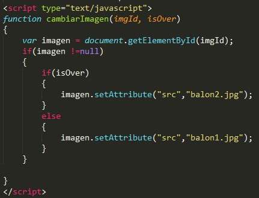
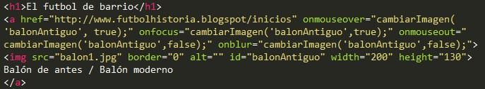
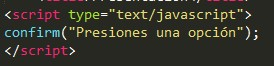

Pauta 2.1 Accesible por teclado
Porporciona acceso a toda la funcionalidad mediante el teclado.
Los componentes de la interfaz de usuario y la navegación deben ser operables.
Porporciona acceso a toda la funcionalidad mediante el teclado.
Toda la funcionalidad del contenido es operable a través de una interfáz de teclado sin que se requiera una determinada velocidad para cada pulsación individual de las teclas, excepto cuando la función interna requiere de una entrada que depende del trayecto de los movimientos del usuario y no sólo de los puntos incial y final.
Una página sobre el futbol de barrio, describe en una de sus secciones la historia del futbol, y junto a ella coloca una imagen con la leyenda de "Balón de antes / Balón moderno" la misma que cambia con el focus del mouse y del teclado a una imagen diferente y vulve a la original al quitarse el focus.
 Si es posible mover el foco a un omponente de la página usuario a interfáz de teclado, entonces el foco de puede quitar de ese componente usando sólo la interfáz de teclado y si se requiere algo más que las teclas de dirección o de tabulación se informa al usuario el método apropiado para mover el foco.
Una app web despliega una caja de diálogo para confirmar una acción al usuario con 2 botones en su parte inferior, el de cancelar y el de aceptar que pueden hacer desaparecer el cuadro de diálogo y devolver al usuario al punto anterior; al momento de mostrarse este diálogo, el focus inmediatamente se muestra en uno de los dos botones, ya sea el de Cancelar o el de Aceptar.
